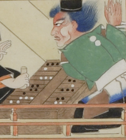

鬼を思わせる姿の男。肌は赤く、髪の毛は青くざんばら髪をしている。眉毛も青く、顔つきは厳しい。手指に鋭い爪が生えている。烏帽子をかぶり、緑色の着物に、裾を青色と黒色に染めた袴を穿いている。向いに座る長谷雄と双六を行なっている。
著作者：福田太華写／出典：親書誌：U426_nichibunken_0061：長谷雄草紙；ハセオソウシ／日付：2006／資源識別子：U426_nichibunken_0061_0001_0001
Copyright (c)2010- International Research Center for Japanese Studies, Kyoto, Japan. All rights reserved.